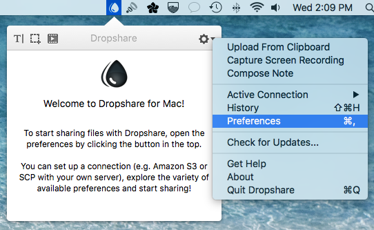
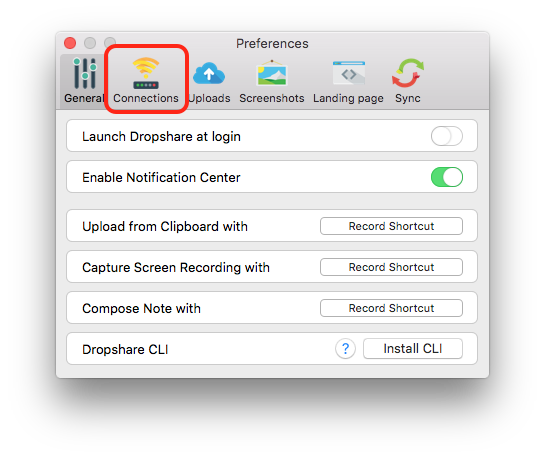
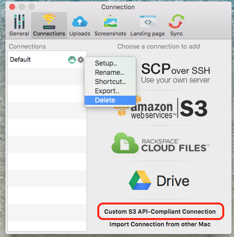
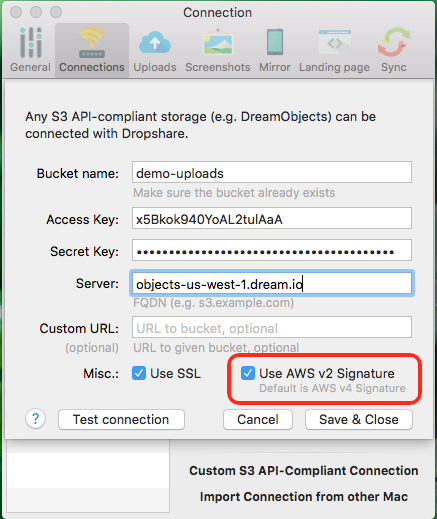
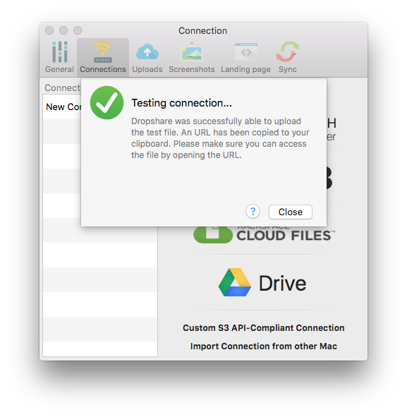
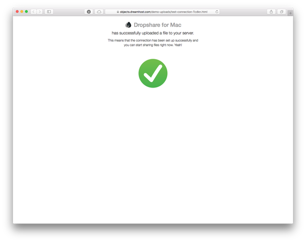
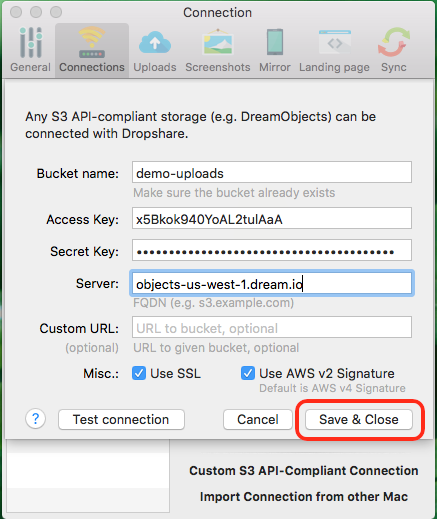

How to Use Dropshare with DreamObjects
Overview
Dropshare is a so-called menulet for OS X that enables you to easily drag&drop files, folders and anything else to your own server, DreamObjects, or other cloud services. Once uploaded, the app copies the link to the file to your Mac’s clipboard and you’re ready to share with anyone you like!
Before you begin, you’ll need to create a bucket on the (Panel > ‘Cloud Services’ > DreamObjects’) page.
Configure Dropshare
Launch Dropshare and click the Dropshare menulet to expand the app. Click the gear icon and go to Preferences.
Click the ‘Connections’ menu item in the Preference pane.
Delete the default SCP connection then click Custom S3 API-Compliant Connection to create a DreamObjects connection.
Enter your DreamObjects Bucket name, Access and Secret keys. Visit the DreamObjects keys article for details.
Use objects.dreamhost.com for the server. Also be sure to check the boxes for Use SSL and Use AWS v2 Signature.
Click the Test connection button. This will copy a URL to your clipboard.
Open a browser window and paste the URL into the address bar. You should see the test image below.
Return to the Dropshare Preference pane and click the Save & Close button and close the preference pane. Dropshare is now configured for use with your DreamObjects bucket!
